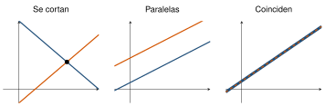
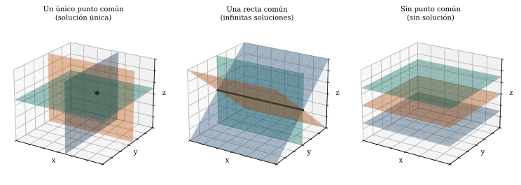
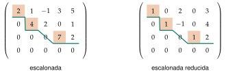
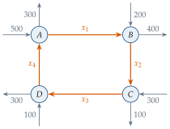

Sistemas de ecuaciones lineales
- reconocer un sistema de ecuaciones lineales y comprobar si un punto es solución;
- interpretar geométricamente sus soluciones (rectas y planos que se cortan);
- escribir la matriz aumentada y aplicar operaciones elementales de fila;
- resolver cualquier sistema con los métodos de Gauss y Gauss-Jordan;
- clasificar un sistema según tenga una, infinitas o ninguna solución.
Resolver sistemas de ecuaciones lineales es el problema más antiguo y más útil del álgebra lineal. Ya en un texto chino de hace unos 2 000 años, Los nueve capítulos sobre el arte matemático, aparece el método que estudiaremos aquí. Hoy los computadores resuelven sistemas con millones de incógnitas para predecir el clima, diseñar puentes o entrenar modelos de inteligencia artificial, y en el fondo hacen lo mismo que haremos a mano con tres o cuatro incógnitas.
2.1 Conceptos
2.1.1 ¿Qué es un sistema de ecuaciones lineales?
Un sistema de \(m\) ecuaciones lineales con \(n\) incógnitas \(x_1,\dots,x_n\) es un conjunto de ecuaciones
Los números \(a_{ij}\) son los coeficientes y los \(b_i\) son los términos independientes. Una solución es una lista de números \((s_1,\dots,s_n)\) que, al reemplazarse, hace verdaderas todas las ecuaciones a la vez.
Con pocas incógnitas usamos letras sin subíndice: \(x,y,z\). Por ejemplo,
es un sistema de 3 ecuaciones con 3 incógnitas. El punto \((2,-1,3)\) es solución, pues \(2-1+3=4\), \(4+1+3=8\) y \(2-3-3=-4\).
¿Es \((1,1,2)\) solución del sistema anterior?
Ver respuesta
2.1.2 La geometría de las soluciones
Con dos incógnitas, cada ecuación es una recta del plano (Capítulo 1). Resolver el sistema es buscar los puntos que están en todas las rectas a la vez. Para dos rectas solo hay tres posibilidades:

Con tres incógnitas, cada ecuación \(ax+by+cz=d\) representa un plano en el espacio. Tres planos pueden cortarse en un único punto, compartir una recta completa o no tener ningún punto en común (Figura 2.2).

Todo sistema de ecuaciones lineales tiene exactamente una, infinitas o ninguna solución. Nunca tiene, por ejemplo, exactamente dos.
Un sistema es
- compatible determinado si tiene una única solución;
- compatible indeterminado si tiene infinitas soluciones;
- incompatible si no tiene solución.
2.1.3 Sistemas equivalentes y operaciones elementales
Dos sistemas son equivalentes si tienen exactamente las mismas soluciones. La estrategia para resolver un sistema es transformarlo, paso a paso, en otro equivalente pero tan sencillo que la solución se lea directamente. Para eso solo se permiten tres movimientos:
Las siguientes operaciones transforman un sistema en otro equivalente:
- Intercambiar dos ecuaciones: \(F_i\leftrightarrow F_j\).
- Multiplicar una ecuación por un número distinto de cero: \(c\,F_i\to F_i\).
- Sumar a una ecuación un múltiplo de otra: \(F_i+c\,F_j\to F_i\).
2.1.4 La matriz aumentada
Al hacer operaciones de fila, las letras \(x,y,z\) solo “ocupan espacio”. Lo que realmente cambia son los números. Por eso escribimos solo los coeficientes en una tabla rectangular llamada matriz.
Al sistema \(\sistema{x+2y+z=9\\2x-y+3z=12\\3x+y-z=1}\) le asociamos
Cada fila es una ecuación; cada columna, salvo la última, corresponde a una incógnita.
2.1.5 Forma escalonada y pivotes
Una matriz está en forma escalonada si:
- las filas formadas solo por ceros están al final;
- en cada fila no nula, el primer número distinto de cero (el pivote) está más a la derecha que el pivote de la fila de arriba.
Está en forma escalonada reducida si además cada pivote vale \(1\) y es el único número no nulo de su columna.

2.1.6 Los métodos de Gauss y de Gauss-Jordan
- El método de Gauss usa operaciones elementales para llevar la matriz aumentada a forma escalonada y luego resuelve “desde abajo hacia arriba” (sustitución regresiva).
- El método de Gauss-Jordan continúa hasta la forma escalonada reducida, en la que la solución se lee directamente.
2.1.7 Cómo leer la solución en la forma escalonada
Una vez escalonada la matriz aumentada, la clasificación es inmediata:
Sea \(n\) el número de incógnitas.
- Si aparece una fila \((0\ 0\ \cdots\ 0\ |\ c)\) con \(c\neq0\) (es decir, la ecuación \(0=c\)), el sistema es incompatible.
- Si no, y hay un pivote en cada una de las \(n\) columnas de incógnitas, es compatible determinado.
- Si no, y hay columnas de incógnitas sin pivote, es compatible indeterminado. Las incógnitas sin pivote se llaman variables libres y pueden tomar cualquier valor.
El número de pivotes se llama rango de la matriz. Volveremos a él en el Capítulo 7.
2.1.8 Sistemas homogéneos
Un sistema es homogéneo si todos sus términos independientes son cero. Siempre tiene al menos la solución trivial \(x_1=x_2=\cdots=x_n=0\). Si tiene más incógnitas que ecuaciones, tiene infinitas soluciones.
Una matriz aumentada escalonada tiene la última fila \((0\ \ 0\ \ 0\ |\ 5)\). ¿Cómo es el sistema?
Ver respuesta
2.2 Cómo utilizar los conceptos
- Escribe la matriz aumentada \((A\,|\,\vb)\).
- Elige un pivote en la primera columna no nula (si conviene, intercambia filas para tener un \(1\) o un número cómodo arriba).
- Haz ceros debajo del pivote con operaciones \(F_i - c\,F_1\to F_i\), donde \(c=\dfrac{\text{número a eliminar}}{\text{pivote}}\).
- Olvida (tapa) la primera fila y repite con la submatriz que queda, hasta llegar a forma escalonada.
- Revisa si hay una fila \((0\ \cdots\ 0\,|\,c)\) con \(c\neq0\): en ese caso, no hay solución.
- Si no, despeja desde la última ecuación hacia arriba (sustitución regresiva).
- Comprueba la solución en las ecuaciones originales.
- Identifica las variables libres (columnas sin pivote) y asígnales parámetros: \(z=t\), \(w=s\), …
- Despeja las variables con pivote en función de los parámetros, de abajo hacia arriba.
- Escribe la solución general, por ejemplo \((x,y,z)=(1-t,\ 3-t,\ t)\) con \(t\in\R\).
- Cada valor del parámetro da una solución particular; comprueba con uno o dos valores.
- Escalona la matriz aumentada sin dividir por expresiones que contengan \(k\).
- Encuentra los valores de \(k\) que anulan algún pivote.
- Para cada uno de esos valores, reemplaza y clasifica; para los demás valores, el sistema suele ser compatible determinado.
- Operar solo con los coeficientes y olvidar la última columna (los términos independientes).
- Usar la fila ya modificada en lugar de la fila del pivote: todas las restas se hacen con la fila del pivote.
- Multiplicar una fila por \(0\): no es una operación elemental (se pierde información).
- Concluir “no hay solución” al ver una fila completa de ceros \((0\ 0\ 0\,|\,0)\): esa fila solo dice \(0=0\).
2.3 Ejemplos resueltos
Resuelve \(\sistema{x+y=10\\2x-y=2}\).
Solución. Sumando las ecuaciones, \(y\) se elimina: \(3x=12\), así que \(x=4\). Reemplazando en la primera, \(y=6\). Solución: \((4,6)\). Geométricamente, las rectas se cortan en ese punto.
Resuelve \(\sistema{x+2y+z=9\\2x-y+3z=12\\3x+y-z=1}\).
Solución.
La matriz está escalonada, con tres pivotes: solución única. De abajo hacia arriba:
Solución: \((x,y,z)=(1,2,4)\). Comprobación: \(1+4+4=9\), \(2-2+12=12\), \(3+2-4=1\). ✓
Continúa el Ejemplo 2.2 hasta la forma escalonada reducida.
Solución.
La última matriz se lee directamente: \(x=1\), \(y=2\), \(z=4\).
Resuelve \(\sistema{x+y+2z=4\\2x+3y+5z=11\\x+2y+3z=7}\).
Solución.
No hay filas del tipo \(0=c\neq0\), pero la columna de \(z\) no tiene pivote: \(z\) es libre. Hacemos \(z=t\):
Solución general: \((x,y,z)=(1-t,\ 3-t,\ t)\), \(t\in\R\). Por ejemplo, \(t=0\) da \((1,3,0)\) y \(t=1\) da \((0,2,1)\). Los tres planos comparten una recta.
Resuelve \(\sistema{x+y+z=2\\x+2y-z=3\\2x+3y=4}\).
Solución.
La última fila dice \(0=-1\), algo imposible. El sistema es incompatible. (Observa que la suma de las dos primeras ecuaciones da \(2x+3y=5\), que contradice la tercera.)
Según el valor de \(k\), clasifica \(\sistema{x+ky=1\\kx+y=1}\).
Solución.
El segundo pivote es \(1-k^2=(1-k)(1+k)\), que se anula para \(k=1\) y \(k=-1\).
- \(k=1\): la fila queda \((0\ 0\,|\,0)\); hay infinitas soluciones (\(x+y=1\)).
- \(k=-1\): la fila queda \((0\ 0\,|\,2)\); sistema incompatible.
- \(k\neq\pm1\): solución única. Como \((1-k^2)y=1-k\), resulta \(y=\dfrac{1}{1+k}\) y luego \(x=\dfrac1{1+k}\).
2.4 Aplicaciones en la vida real
Una nutricionista combina tres alimentos. Cada porción aporta (en gramos):
| Alimento A | Alimento B | Alimento C | |
|---|---|---|---|
| Proteínas | 10 | 4 | 2 |
| Carbohidratos | 20 | 30 | 10 |
| Grasas | 5 | 2 | 8 |
Quiere exactamente 30 g de proteínas, 100 g de carbohidratos y 36 g de grasas. Si \(x,y,z\) son las porciones,
Resolviendo por Gauss se obtiene \(x=2\), \(y=1\), \(z=3\) porciones.
La figura muestra cuatro esquinas de un barrio con calles de un solo sentido y los autos por hora que entran o salen. En cada esquina, los autos que entran son iguales a los que salen.

El sistema es compatible indeterminado. Con \(x_4=t\): \((x_1,x_2,x_3,x_4)=(200+t,\ t,\ 200+t,\ t)\), con \(t\ge0\) (no hay flujos negativos). Si se cierra por obras la calle \(DA\) (\(t=0\)), la calle \(BC\) queda sin tránsito y \(AB\) y \(CD\) deben soportar 200 autos por hora cada una.
En la combustión del propano (gas de cocina), \(x_1\,\mathrm{C_3H_8}+x_2\,\mathrm{O_2}\to x_3\,\mathrm{CO_2}+x_4\,\mathrm{H_2O}\), cada tipo de átomo debe aparecer igual número de veces a cada lado:
Es un sistema homogéneo con infinitas soluciones; buscamos la de enteros positivos más pequeños. Con \(x_1=1\): \(x_3=3\), \(x_4=4\), \(x_2=5\). La reacción balanceada es \(\mathrm{C_3H_8}+5\,\mathrm{O_2}\to3\,\mathrm{CO_2}+4\,\mathrm{H_2O}\).
Las leyes de Kirchhoff dicen que (1) en cada nodo la corriente que entra es igual a la que sale y (2) en cada circuito cerrado (malla) la suma de voltajes de las baterías es igual a la suma de las caídas \(R\cdot I\). Para este circuito se obtiene:
Por Gauss: \(I_1=3\) A, \(I_2=1\) A, \(I_3=2\) A. Los programas de simulación de circuitos plantean y resuelven sistemas así, con miles de ecuaciones.
Un balón se patea y su altura (en metros) se mide en tres instantes: \(h(0)=2\), \(h(1)=7\) y \(h(2)=2\). Suponemos una trayectoria parabólica \(h(t)=a+bt+ct^2\). Cada medición da una ecuación lineal en \(a,b,c\):
Así \(h(t)=2+10t-5t^2\). (El \(-5\) refleja la gravedad: \(\tfrac12\cdot 9.8\approx5\).) Esta técnica, la interpolación, se usa para trazar curvas suaves por puntos dados.
2.5 Ejercicios de práctica
- 2.1Para el sistema \(\sistema{x+y+z=4\\2x-y+z=8\\x+3y-z=-4}\), decide si son soluciones: a) \((2,-1,3)\) b) \((1,1,2)\).Ver solución
- 2.2
Resuelve y clasifica (interpreta geométricamente):
- \(\sistema{x+y=7\\x-y=1}\)
- \(\sistema{3x+2y=12\\x-y=-1}\)
- \(\sistema{2x-4y=6\\-x+2y=-3}\)
- \(\sistema{x+2y=4\\2x+4y=5}\)
- 2.3Escribe la matriz aumentada del sistema \(\sistema{3x-y+2z=5\\x+4z=-1\\2y-z=0}\) y, al revés, escribe el sistema cuya matriz aumentada es \(\aug{rrr|r}{1&0&-2&3\\0&1&5&-1}\).Ver solución
- 2.4
¿Cuáles matrices están en forma escalonada? ¿Cuáles en forma escalonada reducida?
\[P=\begin{pmatrix}1&3&0\\0&0&1\\0&0&0\end{pmatrix},\quad Q=\begin{pmatrix}1&2&3\\0&0&4\\0&5&6\end{pmatrix},\quad R=\begin{pmatrix}2&1&4\\0&1&3\end{pmatrix},\quad S=\begin{pmatrix}1&0&2\\0&1&0\\0&0&1\end{pmatrix}\]Ver solución - 2.5Resuelve por sustitución regresiva: \(\sistema{x+2y-z=3\\y+3z=7\\2z=4}\)Ver solución
- 2.6Sin resolver, explica qué significa geométricamente que un sistema de dos ecuaciones con dos incógnitas no tenga solución.Ver solución
- 2.7Resuelve por el método de Gauss: \(\sistema{x+y+z=6\\2x+3y-z=5\\x-y+2z=5}\)Ver solución
- 2.8Resuelve y escribe la solución general: \(\sistema{x+2y-z=1\\2x+5y+z=5\\x+3y+2z=4}\)Ver solución
- 2.9Demuestra que el sistema \(\sistema{x-y+2z=3\\2x+y-z=1\\3x+z=5}\) es incompatible.Ver solución
- 2.10Lleva a forma escalonada reducida la matriz \(\begin{pmatrix}2&-1&3&1\\1&1&0&5\\0&3&-3&9\end{pmatrix}\) y, considerándola como matriz aumentada de un sistema en \(x,y,z\), escribe sus soluciones.Ver solución
- 2.11Resuelve el sistema homogéneo \(\sistema{x+2y-3z=0\\2x+5y-4z=0\\x+3y-z=0}\).Ver solución
- 2.12Discute según \(k\): \(\sistema{x+y+kz=1\\x+ky+z=1\\kx+y+z=1}\).Ver solución
- 2.13Resuelve el sistema de 3 ecuaciones y 4 incógnitas \(\sistema{x+y-z+2w=3\\2x+3y+z+w=8\\x+2y+2z-w=5}\).Ver solución
- 2.14Un cine vendió 120 entradas y recaudó $595 000. La entrada de adulto cuesta $6 000 y la de niño $3 500. ¿Cuántas entradas de cada tipo se vendieron?Ver solución
- 2.15Una tostaduría mezcla tres cafés de $8 000, $10 000 y $14 000 el kilo para obtener 10 kg de una mezcla que vende a $11 000 el kilo (sin ganar ni perder en la mezcla). Si usa el doble de kilos del café de $10 000 que del de $14 000, ¿cuántos kilos de cada uno usa?Ver solución
- 2.16Encuentra la parábola \(y=a+bx+cx^2\) que pasa por \((-1,6)\), \((1,2)\) y \((2,3)\).Ver solución
- 2.17Balancea la combustión del etano: \(x_1\,\mathrm{C_2H_6}+x_2\,\mathrm{O_2}\to x_3\,\mathrm{CO_2}+x_4\,\mathrm{H_2O}\).Ver solución
- 2.18En una rotonda con tres salidas \(A\), \(B\), \(C\) circulan \(x_1\) autos/h de \(A\) a \(B\), \(x_2\) de \(B\) a \(C\) y \(x_3\) de \(C\) a \(A\). En \(A\) entran 400 y salen 300; en \(B\) entran 200 y salen 350; en \(C\) entran 150 y salen 100 (autos/h). Plantea el sistema, encuentra la solución general y el flujo mínimo posible en el tramo \(CA\).Ver solución
- 2.19Una fábrica produce mochilas (\(x\)), bolsos (\(y\)) y estuches (\(z\)). Cada mochila requiere 1 h de corte, 2 h de costura y 1 h de empaque; cada bolso, 2 h, 1 h y 1 h; cada estuche, 1 h, 3 h y 1 h. Si se dispone de 90 h de corte, 100 h de costura y 60 h de empaque, y se usan todas, ¿cuántas unidades de cada producto se fabrican?Ver solución
- 2.20Desafío. ¿Qué condición deben cumplir \(a\) y \(b\) para que el sistema \(\sistema{x+2y=a\\3x+6y=b}\) tenga solución? En ese caso, ¿cuántas soluciones tiene?Ver solución
2.6 Solucionario
2.1 Solución del ejercicio 2.1
a) Sí: \(2-1+3=4\), \(4+1+3=8\), \(2-3-3=-4\). b) No: la segunda ecuación da \(2-1+2=3\neq8\).↑ volver al enunciado2.2 Solución del ejercicio 2.2
a) \((4,3)\); las rectas se cortan. b) De la segunda, \(x=y-1\); luego \(3(y-1)+2y=12\), \(y=3\), \(x=2\): \((2,3)\). c) La primera es \(-2\) veces la segunda: infinitas soluciones \((3+2t,\ t)\); rectas coincidentes. d) \(2\cdot(x+2y)=8\neq5\): sin solución; rectas paralelas.↑ volver al enunciado2.3 Solución del ejercicio 2.3
\(\aug{rrr|r}{3&-1&2&5\\1&0&4&-1\\0&2&-1&0}\). El sistema es \(\sistema{x-2z=3\\y+5z=-1}\).↑ volver al enunciado2.4 Solución del ejercicio 2.4
\(P\): escalonada reducida. \(Q\): no es escalonada (el pivote de la tercera fila está a la izquierda del de la segunda). \(R\): escalonada, no reducida (pivote \(2\) y hay un \(1\) sobre el segundo pivote). \(S\): escalonada, no reducida (el \(2\) sobre el tercer pivote).↑ volver al enunciado2.5 Solución del ejercicio 2.5
\(z=2\); \(y=7-6=1\); \(x=3-2+2=3\). Solución \((3,1,2)\).↑ volver al enunciado2.6 Solución del ejercicio 2.6
Que las dos rectas son paralelas y distintas: no tienen ningún punto común.↑ volver al enunciado2.7 Solución del ejercicio 2.7
\(F_2-2F_1\), \(F_3-F_1\) y luego \(F_3+2F_2\) llevan a \(\aug{rrr|r}{1&1&1&6\\0&1&-3&-7\\0&0&-5&-15}\). Así \(z=3\), \(y=2\), \(x=1\): solución \((1,2,3)\).↑ volver al enunciado2.8 Solución del ejercicio 2.8
\(F_2-2F_1\), \(F_3-F_1\): ambas dan \((0\ 1\ 3\,|\,3)\); la tercera fila se anula. Con \(z=t\): \(y=3-3t\), \(x=1-2y+z=-5+7t\). Solución general: \((-5+7t,\ 3-3t,\ t)\), \(t\in\R\).↑ volver al enunciado2.9 Solución del ejercicio 2.9
Sumando las dos primeras ecuaciones se obtiene \(3x+z=4\), que contradice \(3x+z=5\). Por Gauss aparece la fila \((0\ 0\ 0\,|\,1)\).↑ volver al enunciado2.10 Solución del ejercicio 2.10
La forma escalonada reducida es \(\begin{pmatrix}1&0&1&2\\0&1&-1&3\\0&0&0&0\end{pmatrix}\). Solución: \(z=t\), \(x=2-t\), \(y=3+t\), es decir \((2-t,\ 3+t,\ t)\).↑ volver al enunciado2.11 Solución del ejercicio 2.11
Escalonando: \(\begin{pmatrix}1&2&-3\\0&1&2\\0&0&0\end{pmatrix}\). Con \(z=t\): \(y=-2t\), \(x=-2y+3z=7t\). Soluciones \((7t,-2t,t)\): infinitas (incluye la trivial con \(t=0\)).↑ volver al enunciado2.12 Solución del ejercicio 2.12
Al escalonar aparecen los factores \(k-1\) y \(k+2\). Si \(k=1\): las tres ecuaciones son \(x+y+z=1\); infinitas soluciones \((1-s-t,\ s,\ t)\). Si \(k=-2\): aparece \(0=3\); incompatible. Si \(k\neq1\) y \(k\neq-2\): solución única \(x=y=z=\dfrac{1}{k+2}\).↑ volver al enunciado2.13 Solución del ejercicio 2.13
Forma escalonada reducida: \(\aug{rrrr|r}{1&0&-4&5&1\\0&1&3&-3&2\\0&0&0&0&0}\). Con \(z=s\), \(w=t\): \((x,y,z,w)=(1+4s-5t,\ 2-3s+3t,\ s,\ t)\).↑ volver al enunciado2.14 Solución del ejercicio 2.14
\(a+n=120\) y \(6\,000a+3\,500n=595\,000\). Reemplazando \(n=120-a\): \(2\,500a=175\,000\), \(a=70\), \(n=50\).↑ volver al enunciado2.15 Solución del ejercicio 2.15
\(x+y+z=10\), \(8x+10y+14z=110\) (en miles), \(y=2z\). Resulta \(z=3\), \(y=6\), \(x=1\) kg.↑ volver al enunciado2.16 Solución del ejercicio 2.16
\(a-b+c=6\), \(a+b+c=2\), \(a+2b+4c=3\). Restando las dos primeras, \(b=-2\); luego \(a+c=4\) y \(a+4c=7\), así \(c=1\), \(a=3\). La parábola es \(y=3-2x+x^2\).↑ volver al enunciado2.17 Solución del ejercicio 2.17
C: \(2x_1=x_3\); H: \(6x_1=2x_4\); O: \(2x_2=2x_3+x_4\). Con \(x_1=2\): \(x_3=4\), \(x_4=6\), \(x_2=7\). \(\ 2\,\mathrm{C_2H_6}+7\,\mathrm{O_2}\to4\,\mathrm{CO_2}+6\,\mathrm{H_2O}\).↑ volver al enunciado2.18 Solución del ejercicio 2.18
\(A\): \(400+x_3=x_1+300\); \(B\): \(x_1+200=x_2+350\); \(C\): \(x_2+150=x_3+100\). Solución general \((x_1,x_2,x_3)=(t+100,\ t-50,\ t)\). Como \(x_2\ge0\), debe ser \(t\ge50\): el flujo mínimo en \(CA\) es 50 autos/h.↑ volver al enunciado2.19 Solución del ejercicio 2.19
\(\sistema{x+2y+z=90\\2x+y+3z=100\\x+y+z=60}\). Solución: 20 mochilas, 30 bolsos y 10 estuches.↑ volver al enunciado2.20 Solución del ejercicio 2.20
\(F_2-3F_1\) da \((0\ 0\,|\,b-3a)\). Hay solución si y solo si \(b=3a\), y en ese caso hay infinitas: \((a-2t,\ t)\).↑ volver al enunciado
¿Terminaste de estudiar este capítulo?